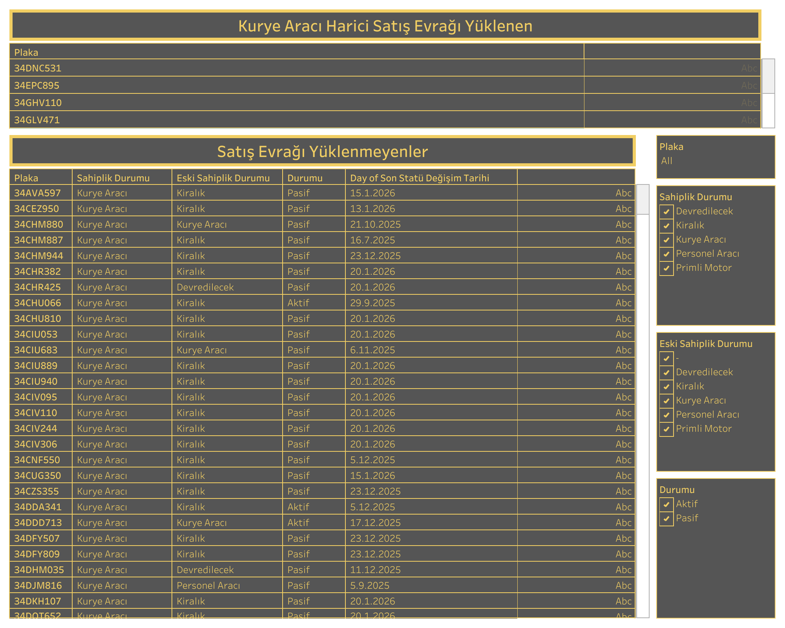

Canlı Rapora Erişin
Güncel satış evrakı yüklemeyen araç verilerini Tableau üzerinde görüntüleyin.
Dashboard Hakkında
Ne Gösterir?
Satış Evrakı Yüklemeyenler raporu, satış evrakı yüklememiş kurye araçlarını sahiplik durumu, eski sahiplik durumu ve araç durumuna göre listeler. Eksik evrak yükleme takibinde ve operasyonel uyum kontrolünde kullanılır.
- Plaka Listesi: Satış evrakı yüklememiş araçların plakaları
- Sahiplik Durumu: Devredilecek, Kiralık, Kurye Aracı, Personel Aracı, Primli Motor gibi sahiplik kategorileri
- Eski Sahiplik Durumu: Aracın önceki sahiplik kategorisi
- Araç Durumu: Aktif veya Pasif durum bilgisi ve son statü değişim tarihi
- Filtreler: Plaka, sahiplik durumu, eski sahiplik durumu ve araç durumu filtreleri
Dashboard Önizleme

Satış Evrakı Yüklemeyenler — Tableau